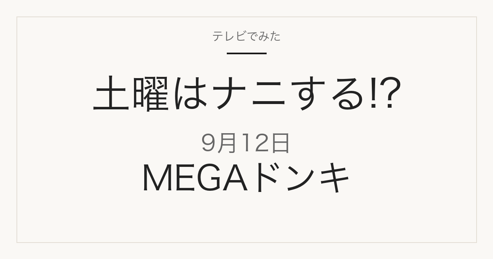

01
爆売れキッチングッズBEST3
キッチン用品のランキング企画です。商品名と順位は放送で発表されます。
テレビ紹介商品の記録メディア
この記事には広告・アフィリエイトリンクが含まれる場合があります。
2026年9月12日（土）放送
やす子の週末福袋はMEGAドンキ／キッチングッズBEST3・お掃除スポンジ
これは放送前の記事です。番組公式の予告で確認できた内容だけを掲載しています。商品名・メーカー・順位・価格は、2026年9月9日時点の番組公式の予告には記載がありません。放送後、番組公式やメーカー公式で確認できたものからこのページに追記します。
MEGAドンキ企画の予告を見る
やす子の週末福袋
この回のテーマは、MEGAドンキのキッチン用品・掃除用品の紹介予定です。9月12日の「やす子の週末福袋」は、ディスカウントストアMEGAドン・キホーテが舞台です。番組公式の予告には、次の4つが並んでいます。いずれもテーマだけの案内で、具体的な商品名・メーカー名・価格・順位は番組公式の予告には書かれていません。
01
キッチン用品のランキング企画です。商品名と順位は放送で発表されます。
02
公式予告は「卵かけご飯がさらに手軽に！そしてお弁当に！？」と案内しています。どんな商品かは明かされていません。
03
公式予告は「台所のお掃除革命！超給水＆はがせるスポンジとは！？」と案内しています。
04
公式予告に「お値段999円！？業界震撼の激安リカバリーウェアが登場！」と案内されています。
上のテーマは、フジテレビ公式・カンテレ公式の放送内容欄（2026年9月9日確認）に記載されているものです。番組内容は変更になる場合があります。
日帰り ぷらっとりっぷ
同じ回で放送予定のドライブ旅企画です。公式予告では、長距離ジップラインと本格アスレチックへの挑戦、世界初とされる食パンを使った食パンバーガー、昔ながらの和菓子屋への訪問が案内されています。店名・所在地・料金は予告に出ていません。放送後、確認できたものを追記します。
知って得する！？暮らしハックラボ（※一部地域除く）
この企画は一部地域では放送されません。
9月12日の放送後、このページに次の情報が加わります。ブックマークしておけば、同じURLのまま最新の内容を見られます。
掲載するのは、番組公式かメーカー・店舗の公式情報で確認できたものだけです。
過去の放送回の記事です。
当サイトは番組公式サイトではありません。放送内容は変更になる場合があります。